Every Wikimedia Commons candidate pulled for this page, by search category. Green border + SELECTED badge = used in the built page. Swap by editing photos.json.
tokyo_station_platform
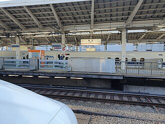
#1 File:Shinkansen platform at Tokyo Station 15.jpg CC0
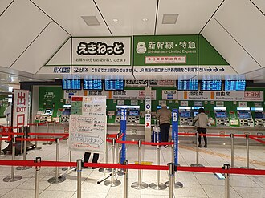
#2 File:Shinkansen platform at Tokyo Station 16.jpg CC0
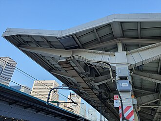
#3 File:Shinkansen platform at Tokyo Station 19.jpg CC0
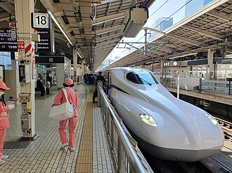
#4SELECTED File:Shinkansen platform at Tokyo Station 22.jpg CC0
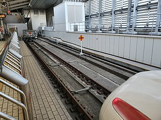
#5 File:Shinkansen platform at Tokyo Station 28.jpg CC0
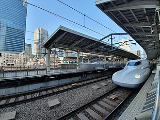
#6 File:Shinkansen platform at Tokyo Station 5.jpg CC0
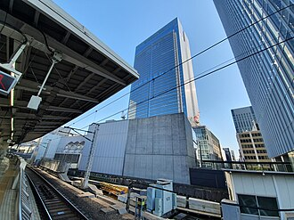
#7 File:Shinkansen platform at Tokyo Station 7.jpg CC0
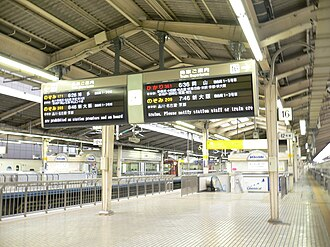
#8 File:Tokyo-Station-2005-7-21 4.jpg CC BY-SA 3.0
ginza_street
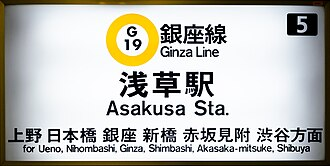
#9 File:Asakusa Sta. Sign, Ginza Line, Tokyo 130810 1.jpg CC BY-SA 3.0
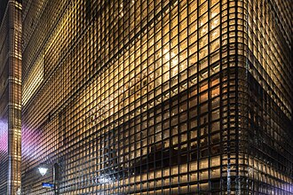
#10 File:Exterior view of the illuminated facade of Maison Hermès, Ginza, Tokyo, Japan.jpg CC BY-SA 4.0
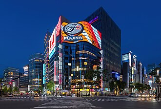
#11 File:Illuminated street corner at blue hour - facade of the building Fujiya in Ginza Chuo-ku Tokyo Japan.jpg CC BY-SA 4.0
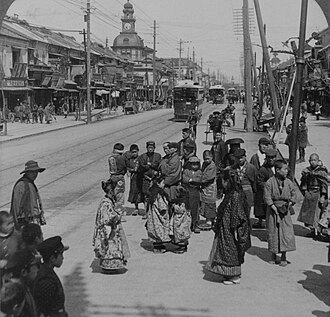
#12 File:Tokyo ginza street 1904.jpg Public domain
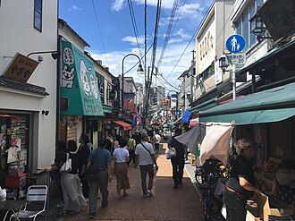
#13 File:Yanaka Ginza 2.jpg CC BY-SA 4.0
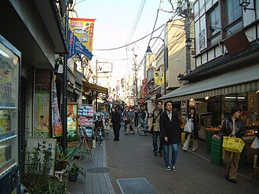
#14 File:Yanaka Ginza Street by kolshica in Tokyo.jpg CC BY 2.0
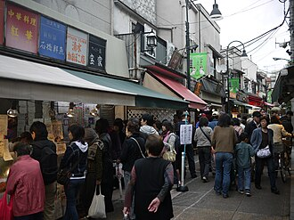
#15 File:Yanaka Ginza shopping street (4041690725).jpg CC BY 2.0
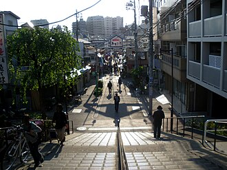
#16 File:Yanaka ginza street.jpg CC BY-SA 3.0
printing_workshop
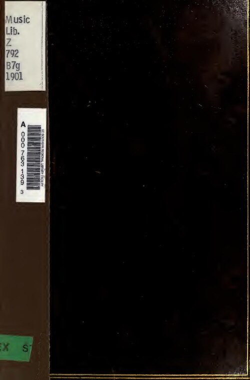
#17 File:A guide to the exhibition in the King's Library illustrating the history of printing, music-printing and bookbinding (IA guidetoexhibitio00britiala).pdf Public domain
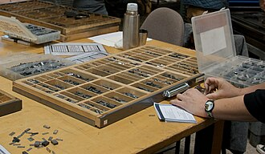
#18 File:California job case.jpg CC BY 2.0
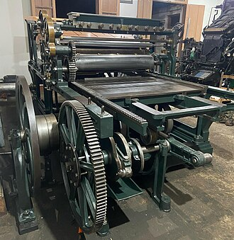
#19 File:Impressora Marinoni e máquina de linotipo na oficina gráfica de O Taquaryense.jpg CC BY 4.0#20 File:In Bamberg, the first printing press in nowadays Bavaria was built and the first German book was printed in 1461. After the painting by Rothbart.jpg Public domain
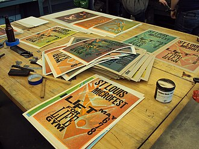
#21 File:Letterpress posters by Amos Paul Kennedy Jr.jpg CC BY-SA 4.0
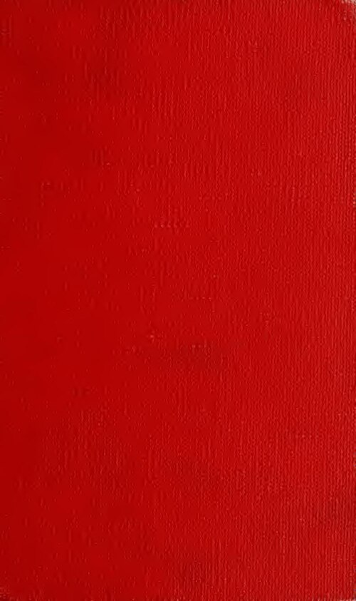
#22 File:Printing - a practical treatise on the art of typography as applied more particularly to the printing of books (IA printingpractica00jacorich).pdf Public domain
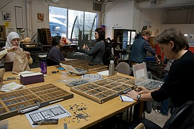
#23 File:Typesetting workshop.jpg CC BY 2.0#24 File:Zincography - a practical guide to the art as practised in connexion with letterpress printing (IA zincographypract00bock).pdf Public domain
silkscreen_printing
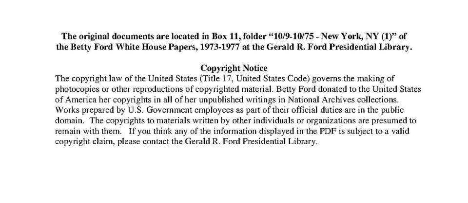
#25 File:10-9-10-75 - New York, NY (1) - DPLA - 50d903980aef71731ab2634a63392473.pdf Public domain
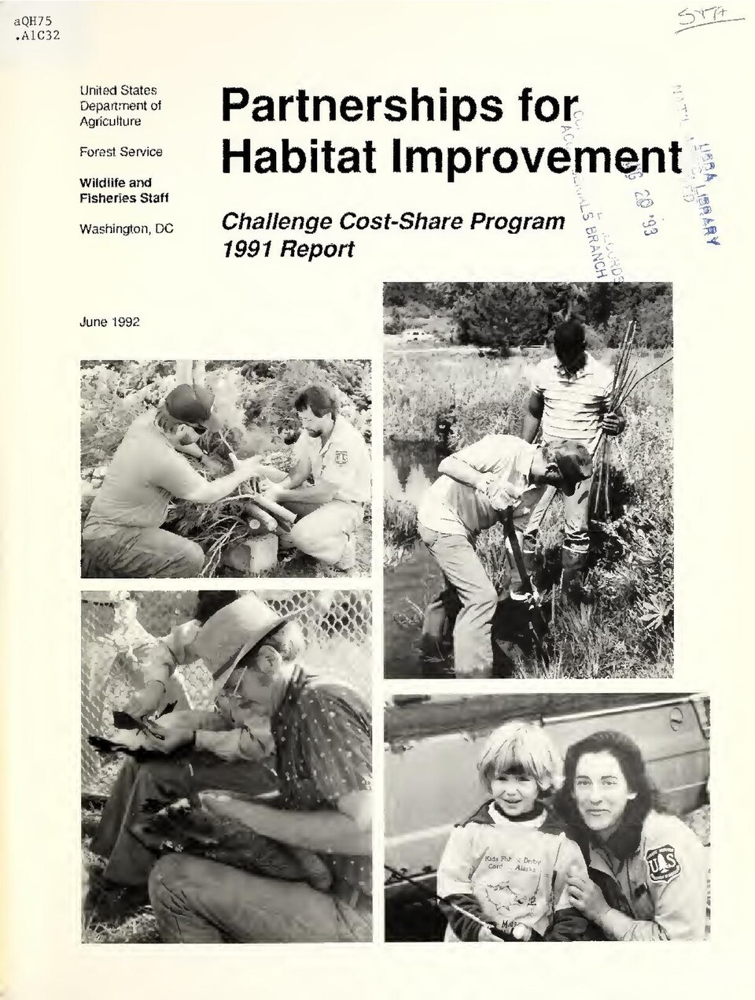
#26 File:Challenge cost-share program report for .. (IA CAT93998278004).pdf Public domain#27 File:Farahnaz Tafreshi.JPG CC BY-SA 4.0
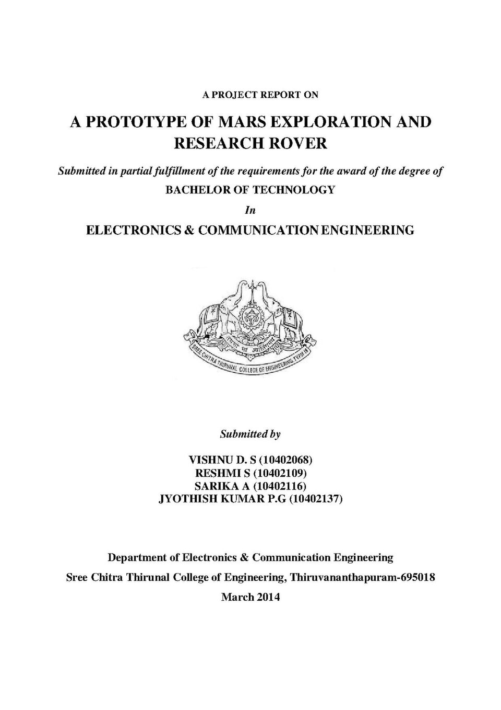
#28 File:Mars Exploration and Research Rover ( Prototype ) Report.pdf CC BY-SA 3.0#29 File:NOLA Express 1970-02-06.pdf Public domain
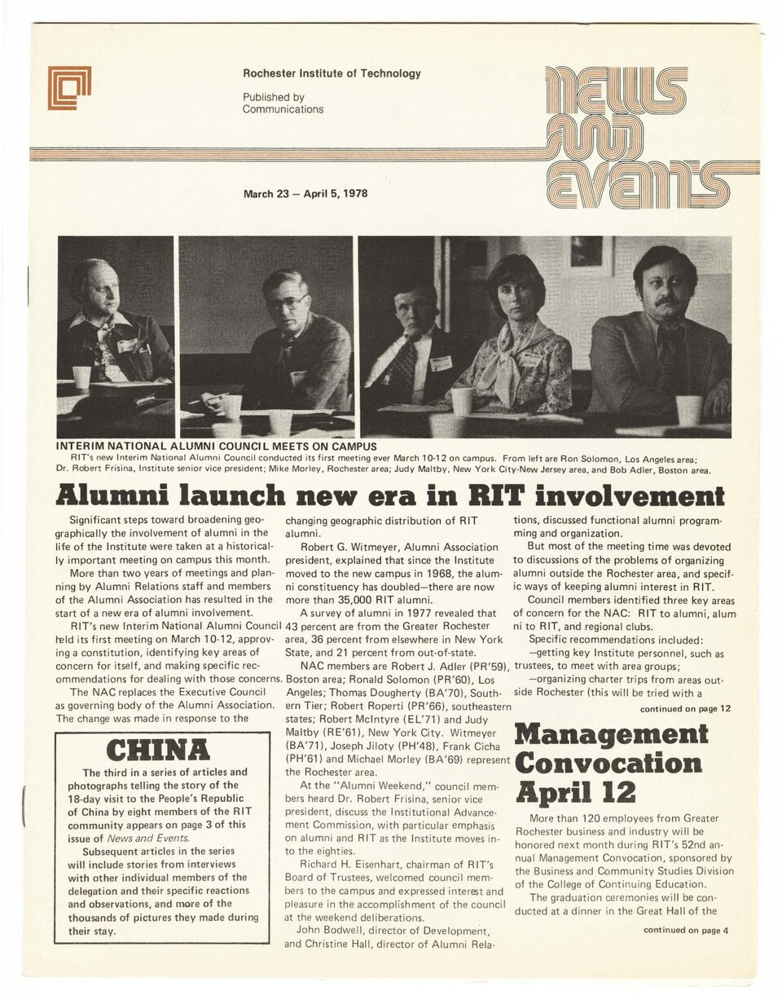
#30 File:RIT NandE 1978 Mar23 Complete.pdf Public domain
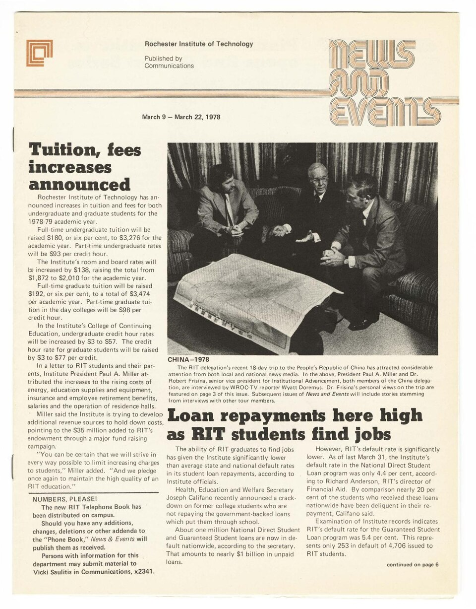
#31 File:RIT NandE 1978 Mar9 Complete.pdf Public domain
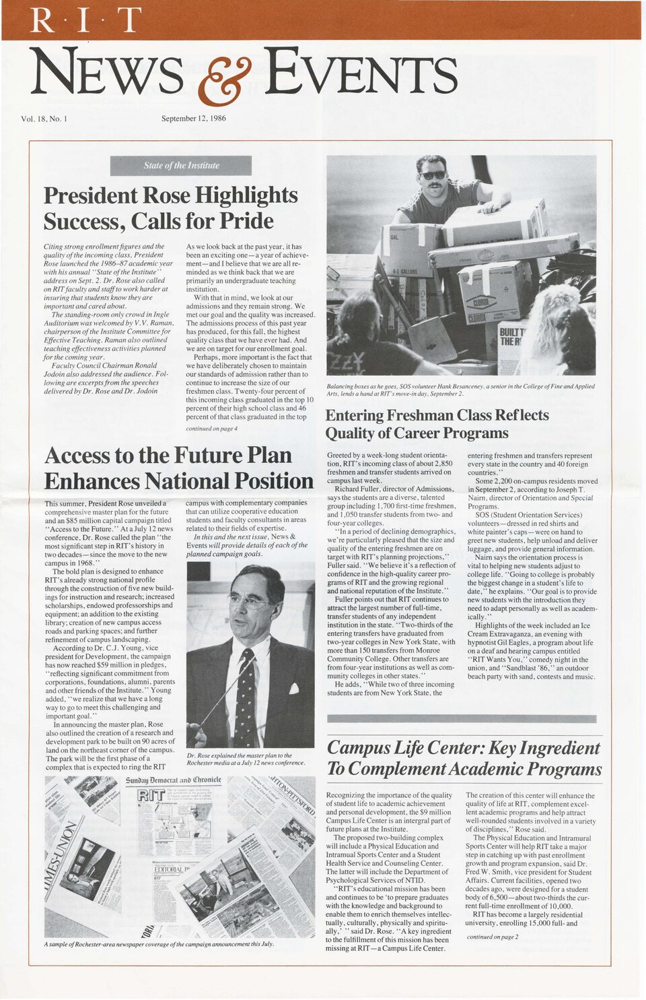
#32 File:RIT NandE Vol18Num1 1986 Sep12 Complete.pdf Public domain
kappabashi
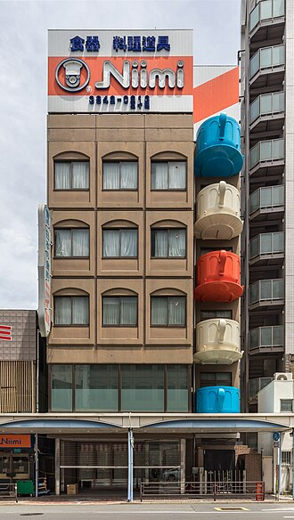
#33 File:Coffee cup-shaped balconies, Niimi Tableware, Kappabashi Dougu Street, Tokyo, Japan (front view).jpg CC BY-SA 4.0#34 File:Coffee cup-shaped balconies, Niimi Tableware, Kappabashi Dougu Street, Tokyo, Japan (side view).jpg CC BY-SA 4.0#35 File:Cream and red coffee cup-shaped balconies, Niimi Tableware, Kappabashi Dougu Street, Tokyo, Japan.jpg CC BY-SA 4.0
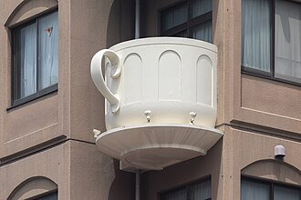
#36 File:Cream coffee cup-shaped balcony, Niimi Tableware, Kappabashi Dougu Street, Tokyo, Japan.jpg CC BY-SA 4.0
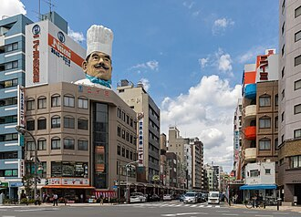
#37 File:Kappabashi-dori streetcorner (Kitchen town - southern end) Tokyo Japan.jpg CC BY-SA 4.0#38 File:Kappabashi-dori streetcorner (Kitchen town - southern end) a sunny morning in Tokyo Japan.jpg CC BY-SA 4.0
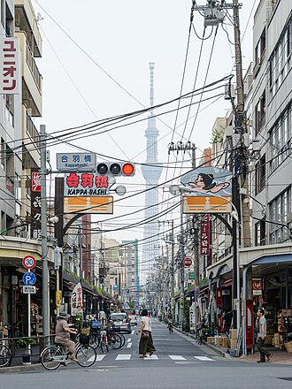
#39SELECTED File:Kappabashi Street with Tokyo Skytree in Background, Tokyo 130810 1.jpg CC BY-SA 3.0
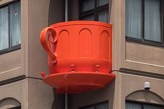
#40 File:Red coffee cup-shaped balcony, Niimi Tableware, Kappabashi Dougu Street, Tokyo, Japan.jpg CC BY-SA 4.0
kappabashi_knife
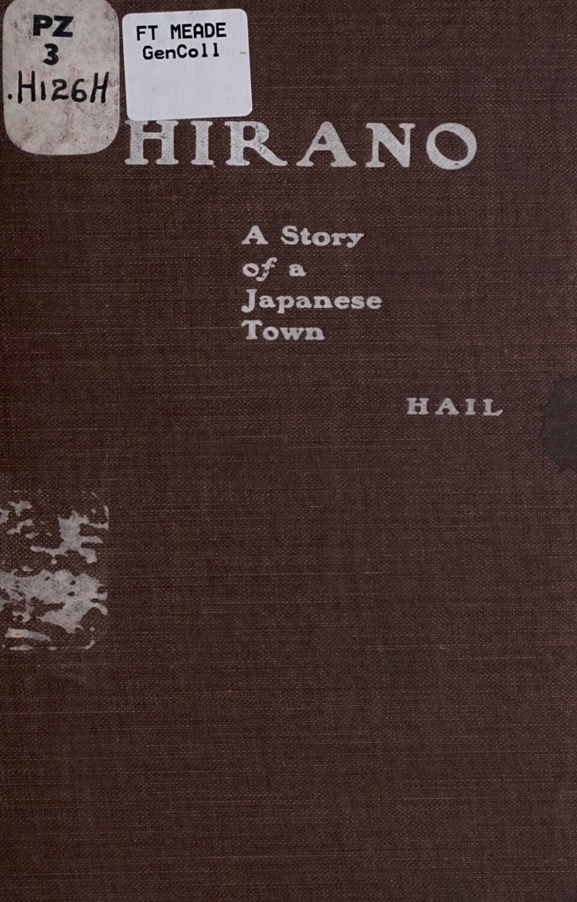
#41 File:Hirano, a story of a Japanese town (IA hiranostoryofjap00hail).pdf Public domain
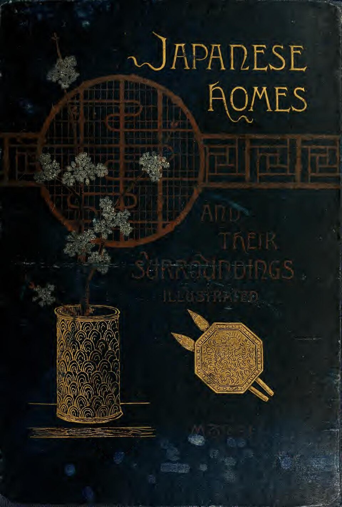
#42 File:Japanese Homes and their Surroundings 1885 by Edward S. Morse (1889 4th ed).pdf CC BY-SA 4.0
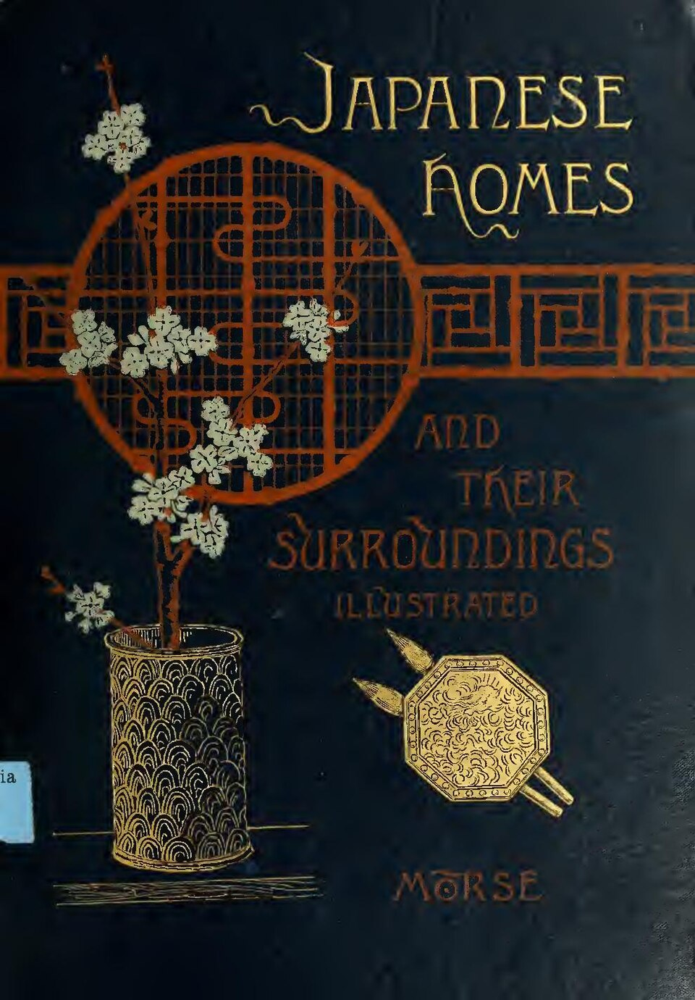
#43 File:Japanese homes and their surroundings (IA japanesehomes00mors).pdf Public domain
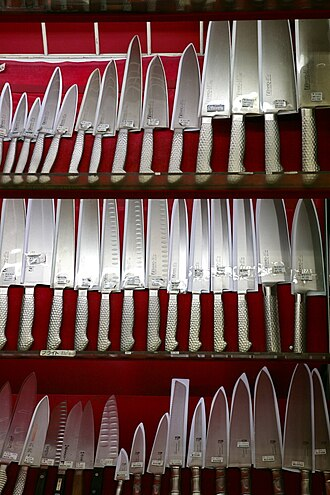
#44 File:Japonese knife Tokyo (willem!).jpg CC BY 2.0
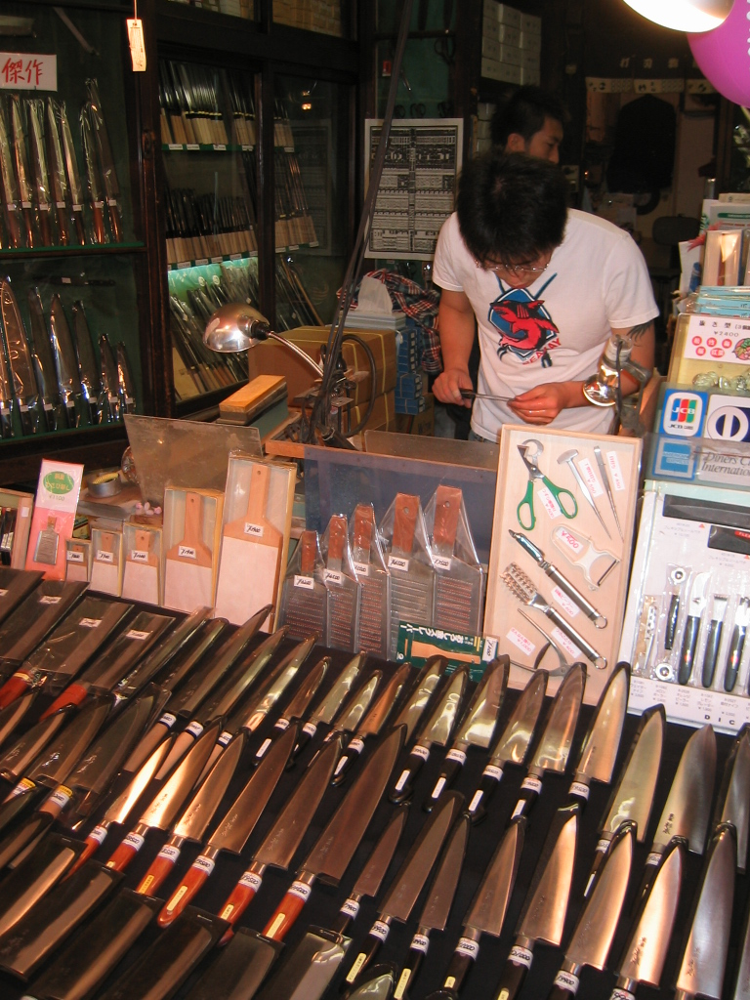
#45 File:Kitchen knives shop by Moody75 in Tsukiji Fish Market, Tokyo.jpg CC BY-SA 2.0#46 File:Kitchen knives store by Photocapy in Kappa-bashi, Tokyo.jpg CC BY-SA 2.0#47 File:Shop Talks on Economics.djvu Public domain
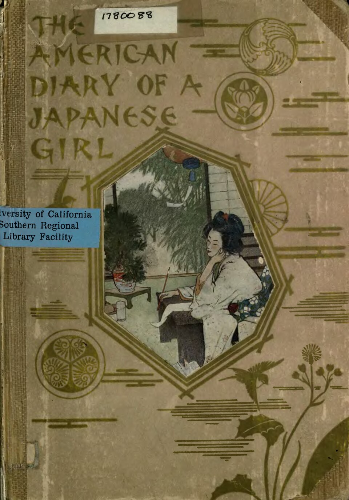
#48 File:The American Diary of a Japanese Girl.djvu Public domain
food_samples
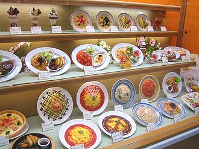
#49 File:Food samples 1.jpg Public domain
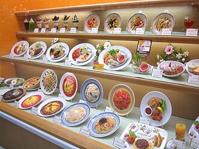
#50 File:Food samples 2.jpg Public domain
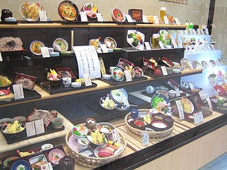
#51 File:Food samples 3.jpg Public domain
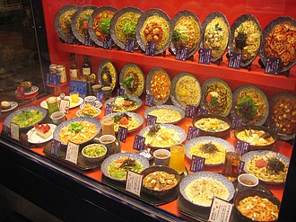
#52 File:Food samples 4.jpg Public domain
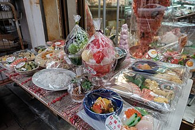
#53SELECTED File:Plastic food for restaurant displays - Kappabashi Kitchen Town in Taito Ward (50119191636).jpg CC BY 2.0
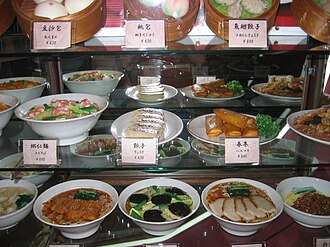
#54 File:Plastic food samples by shelms in Yokohama Chinatown.jpg CC BY-SA 2.0
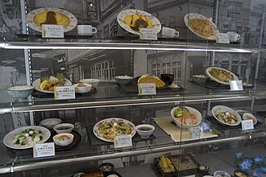
#55 File:Plastic mockup food.jpg CC BY-SA 4.0
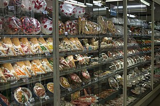
#56 File:Sampuru plastic food items (9412111724).jpg CC BY 2.0
yanaka_ginza
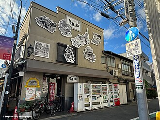
#57 File:In Yanaka Ginza (53415771852).jpg CC BY 2.0
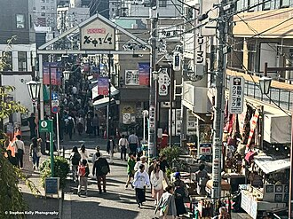
#58 File:Yanaka Ginza, Yanaka (53417016334).jpg CC BY 2.0
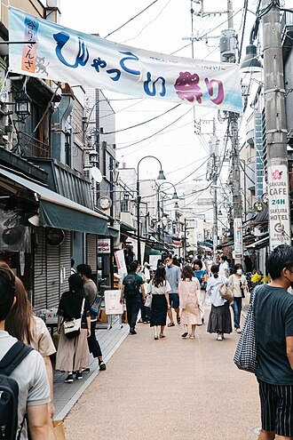
#59 File:Yanaka Ginza (52492089292).jpg CC BY 2.0#60 File:Yanaka Ginza (52492570926).jpg CC BY 2.0#61 File:Yanaka Ginza (52493036385).jpg CC BY 2.0#62 File:Yanaka Ginza (53149155977).jpg CC BY 2.0#63SELECTED File:Yanaka Ginza 2.jpg CC BY-SA 4.0#64 File:Yanaka Ginza entrance.jpg CC BY 4.0
yanaka_street
#65 File:2024-10-20 Tokyo, Yanaka 1.jpg CC BY 4.0#66 File:2024-10-20 Tokyo, Yanaka 2.jpg CC BY 4.0#67 File:2024-10-20 Tokyo, Yanaka 3.jpg CC BY 4.0#68 File:2024-10-20 Tokyo, Yanaka 4.jpg CC BY 4.0#69 File:2024-10-20 Tokyo, Yanaka 5.jpg CC BY 4.0#70 File:At a Yanaka Temple, Tokyo JP(1).jpg CC BY-SA 4.0#72 File:Tokyo - Yanaka 141A.jpg CC BY-SA 3.0
sunshine_city
#73 File:Ikebukuro station @ Sunshine 60 Observatory @ Sunshine City @ Ikebukuro (9350794957).jpg CC BY 2.0#74 File:Ikebukuro sunshine 1974 air.jpg Attribution#75 File:Ikebukuro sunshine 1979 air.jpg Attribution#76SELECTED File:On the way to Sunshine City サンシャインシティ in Ikebukuro, Tokyo, Japan (26295481219).jpg CC BY 2.0#77 File:Sunshine 60 Ikebukuro Tokyo 20070304-06.jpg CC BY-SA 2.5#78 File:Sunshine City 2012.JPG CC BY-SA 3.0#79 File:Sunshine City Tokyo.jpg CC BY 3.0#80 File:Sunshine City Tokyo (2).jpg CC BY 3.0
soba_noodles
#81 File:Dried soba noodles by FotoosVanRobin.jpg CC BY-SA 2.0#82 File:Soba-Noodles-Deliveryman-Tokyo-1935.png Public domain#83 File:Soba and tempura combo (26498960080).jpg CC BY-SA 2.0#84 File:Ten zaru soba by WordRidden at E-Kagen in Brighton.jpg CC BY 2.0#85 File:Ten zaru soba by akira yamada in Yokohama.jpg CC BY-SA 2.0#86 File:Ten zaru soba by jetalone in Tokyo.jpg CC BY 2.0#87 File:Zaru soba at kiraku, mitaka (24542703737).jpg CC BY-SA 2.0#88 File:Zaru soba by spinachdip.jpg CC BY-SA 2.0
unagi_don
#89SELECTED File:Eel bowl, bowl of eel and rice; 2013.jpg CC BY 2.0#90 File:Una-tama don - MOGUMOGU 2025-07-19.jpg CC0#91 File:Unadon - Flickr - chooyutshing.jpg Public domain#93 File:日式蒲燒鰻魚飯 (DSC04153).jpg CC BY-SA 4.0
omurice
#94 File:Cutopen-local-shop-omurice-with-ketchup-Japan-nov2014.jpg CC BY 3.0#95 File:Kichi Kichi Omurice, Kyoto Prefecture; August 2020 (01).jpg CC BY 2.0#96 File:Kichi Kichi Omurice, Kyoto Prefecture; August 2020 (12).jpg CC BY 2.0#97 File:Kichi Kichi Omurice, Kyoto Prefecture; August 2020 (13).jpg CC BY 2.0#98 File:Kichi Kichi Omurice, Kyoto Prefecture; August 2020 (14).jpg CC BY 2.0#99 File:Omurice-inshop-okayama-japan-2019-08-14.webm CC BY-SA 4.0#100SELECTED File:Omurice by Taimeiken.jpg CC BY 2.0#101 File:Omurice by kina3.jpg CC BY 2.0
kappabashi2
#102 File:Coffee cup-shaped balconies, Niimi Tableware, Kappabashi Dougu Street, Tokyo, Japan (side view).jpg CC BY-SA 4.0#103 File:Cream and red coffee cup-shaped balconies, Niimi Tableware, Kappabashi Dougu Street, Tokyo, Japan.jpg CC BY-SA 4.0#104 File:Cream coffee cup-shaped balcony, Niimi Tableware, Kappabashi Dougu Street, Tokyo, Japan.jpg CC BY-SA 4.0#105 File:Kappabashi-dori Teacup Balconies (39957401051).jpg CC BY 2.0#106 File:Kappabashi-dori streetcorner (Kitchen town - southern end) Tokyo Japan.jpg CC BY-SA 4.0#107 File:Kappabashi-dori streetcorner (Kitchen town - southern end) a sunny morning in Tokyo Japan.jpg CC BY-SA 4.0#108 File:Kappabashi Dori @ Asakusa (13824484275).jpg CC BY 2.0#109 File:Red coffee cup-shaped balcony, Niimi Tableware, Kappabashi Dougu Street, Tokyo, Japan.jpg CC BY-SA 4.0
ginza_crossing
#110SELECTED File:20130930 35 Tokyo - Ginza (10377869233).jpg CC BY 2.0#111 File:GFX02488 (33373154670).jpg CC BY 2.0#112 File:Glendale Daily Press 1923-09-27 (IA cgl 002222).pdf Public domain#113 File:Japan and Korea.djvu Public domain#114 File:Within the gateways of the Far East - a record of recent travel (IA cu31924023271608).pdf Public domain
ginza_people
#115 File:Chuo-dori Ginza.jpg CC BY-SA 2.0#116 File:Chuo Dori Street, Ginza (30312228788).jpg CC BY 2.0#117 File:Chuo Dori Street, Ginza (30312237258).jpg CC BY 2.0#118 File:Chuo Dori Street, Ginza (43461288734).jpg CC BY 2.0#119 File:Nihonbashi, Chūō-ku, Tokyo (1967-05-02 by Roger W).jpg CC BY-SA 2.0#120 File:Side Street near Chūō-dōri, Ginza (1967-05-02 by Roger W).jpg CC BY-SA 2.0#121 File:Tokyo Ginza 2012 (8266687973).jpg CC BY 2.0#122 File:Tokyo crosswalk (Unsplash).jpg CC0
screen_printing_hand
#123 File:Hand painted color separation on transparent overlay.png CC BY-SA 3.0#124 File:Plate printing and die stamping; how to operate a department for copperplate and steel-die engraving and printing (IA plateprintingdie00sala).pdf Public domain#125 File:Printing for profit (IA printingforprofi00fran).pdf Public domain#126 File:Standard specifications for book printing (IA standardspecific00smarrich).pdf Public domain#127 File:The Educational Screen - Volume 4.djvu Public domain#128 File:The Educational Screen - Volume 5-6.djvu Public domain#129 File:The Educational screen (IA educationalscree09chicrich).pdf Public domain#130 File:Typographia - Or The Printer’S Instructor Including An Account Of The Origin Of Printing 2 Vols (IA dli.granth.37804).pdf Public domain
letterpress_press_operator
#131 File:A short history of the printing press and of the improvements in printing machinery from the time of Gutenberg up to the present day (IA cu31924029499260).pdf Public domain#132 File:Adana Model 2H-s Printing machine (4203029511).jpg CC BY 2.0#133 File:Early letterpress (25630899992).jpg CC BY 2.0#134 File:Illustrated catalogue and price list of John Thomson Press Company's platen presses - for letterpress and color printing, embossing, bookcover stamping and paper-box cutting and scoring (IA illustratedcatal00john 1).pdf Public domain#135 File:Letterpress from earliest days of printing (25794045595).jpg CC BY 2.0#136 File:Minute Book of the George Waterston Letterpress Chapel, 1913 - 1956 (4271999866).jpg CC BY 2.0#137 File:Printing for business; a manuual of printing practice in non-technical idiom (IA printingforbusin00thor).pdf Public domain#138 File:Zincography - a practical guide to the art as practised in connexion with letterpress printing (IA zincographypract00bock).pdf Public domain
printing_press_hands
#139 File:(Catalogue of) printing machines ... hand-presses, self-inking machines, etc. .. (IA cu31924029499252).pdf Public domain#140 File:Color and its distribution in printing. How to estimate ink (IA coloritsdistribu00andr).pdf Public domain#141 File:Gray's Ferry printing ink works (IA graysferryprinti00cero).pdf Public domain#142 File:Medieval printing press.jpg Public domain#143 File:Printing apparatus for the use of amateurs - containing full and practical instructions for the use of Cowper's parlour printing press (IA printingapparatu00holtrich).pdf Public domain#144 File:The Printing Press. Step 3. Inking the text.jpg CC BY-SA 3.0#145 File:The printing press and the gospel.. (IA printingpressgos00palm).pdf Public domain#146 File:The triumphs of the printing press (IA cu31924105731214).pdf Public domain
kappabashi_shop_person
#147 File:Coffee cup-shaped balconies, Niimi Tableware, Kappabashi Dougu Street, Tokyo, Japan (side view).jpg CC BY-SA 4.0#148 File:Cream and red coffee cup-shaped balconies, Niimi Tableware, Kappabashi Dougu Street, Tokyo, Japan.jpg CC BY-SA 4.0#149 File:Cream coffee cup-shaped balcony, Niimi Tableware, Kappabashi Dougu Street, Tokyo, Japan.jpg CC BY-SA 4.0#150 File:Kappabashi-dori Teacup Balconies (39957401051).jpg CC BY 2.0#151 File:Kappabashi-dori streetcorner (Kitchen town - southern end) Tokyo Japan.jpg CC BY-SA 4.0#152 File:Kappabashi-dori streetcorner (Kitchen town - southern end) a sunny morning in Tokyo Japan.jpg CC BY-SA 4.0#153 File:Kitchen knives store by Photocapy in Kappa-bashi, Tokyo.jpg CC BY-SA 2.0#154 File:Red coffee cup-shaped balcony, Niimi Tableware, Kappabashi Dougu Street, Tokyo, Japan.jpg CC BY-SA 4.0
printmaking_studio
#155 File:2021 Torpedo Factory Art Center, 105 North Union Street, Alexandria.jpg CC BY-SA 4.0#156 File:2021 Torpedo Factory Art Center interior, staircase.jpg CC BY-SA 4.0#157 File:2021 Torpedo Factory Art Center interior 1.jpg CC BY-SA 4.0#158 File:2021 Torpedo Factory Art Center interior 2.jpg CC BY-SA 4.0#159 File:2021 Torpedo Factory Art Center interior 3.jpg CC BY-SA 4.0#160 File:Mokuhankan (16200105176) (2).jpg CC BY-SA 2.0#161 File:Queen Henrietta Maria with Jeffery Hudson (England, 1633) - Sir Anthony Van Dick (1549 - 1641) and workshop (43808286051).jpg CC BY 2.0#162 File:SZ 深圳 Shenzhen 龍華區 Longhua 裕新路 Yuxin Road 觀瀾 原創版畫基地 Guanlan Original Printmaking Base map sign January 2024 R12S 02.jpg CC0
silk_screen_studio
#163 File:About Advertising And Printing.pdf Public domain#164 File:Studio international (IA studiointernatio51lond).pdf Public domain#165 File:The Educational screen (IA educationalscree09chicrich).pdf Public domain#166 File:The International studio (IA internationalst5923unse 0).pdf Public domain#167 File:The International studio (IA internationalstu4718unse).pdf Public domain#168 File:The International studio (IA internationalstu5421unse).pdf Public domain#169 File:The International studio (IA internationalstu7027unse).pdf Public domain#170 File:The silver sunbeam - a practical and theoretical text-book on sun drawing and photographic printing (IA silversunbeampra00towl 1).pdf Public domain
letterpress_studio_person
#171 File:Cassell's illustrated family paper exhibitor; containing about 300 illustrations, with letterpress descriptions of all the principal objects in the International exhibition of 1862 (IA cassellsillustr00).pdf Public domain#172 File:Handbook to the popular, poetical and dramatic literature of Great Britain, from the invention of printing to the restoration (IA handbooktopopula00hazl).pdf Public domain#173 File:Leonardo da Vinci, artist, thinker and man of science; (IA leonardodavincia01munt).pdf Public domain#174 File:Some notes on books and printing; a guide for authors, publishers, & others (IA jacosomenotesonbooks00rich).pdf Public domain#175 File:Some notes on books and printing; a guide for authors, publishers, & others (IA somenotesonbooks00jacorich).pdf Public domain#176 File:Some notes on books and printing - a guide for authors, publishers & others (IA somenotesonbooks00jacoiala).pdf Public domain#177 File:Sun pictures - a series of twenty heliotype illustrations of ancient and modern art, with descriptive letterpress (IA sunpicturesserie00unse).pdf Public domain#178 File:The education of an artist (IA educationofartis00hind).pdf Public domain
print_shop_japan
#179 File:The Craftsman (IA craftsman1319unse).pdf Public domain#180 File:The Craftsman (IA craftsman1519unse).pdf Public domain#181 File:The Craftsman (IA craftsman1819unse).pdf Public domain#182 File:The Craftsman (IA craftsman2119unse).pdf Public domain#183 File:The Craftsman (IA craftsman2219unse).pdf Public domain#184 File:The Craftsman (IA craftsman2719unse).pdf Public domain#185 File:The Craftsman (IA craftsman3019unse).pdf Public domain#186 File:The Craftsman (IA craftsman5190unse).pdf Public domain
mokuhankan
#187 File:Mokuhankan (16200097706).jpg CC BY-SA 2.0#188SELECTED File:Mokuhankan (16200105176) (2).jpg CC BY-SA 2.0
tendon
#189SELECTED File:Tendon of Ten'ya.jpg CC0
tamagoyaki
#190SELECTED File:Tamago yaki by ayustety in Tokyo.jpg CC BY-SA 2.0
uni_donburi
#191SELECTED File:Rice bowl topped with sea urchin (9665261271).jpg CC BY-SA 2.0